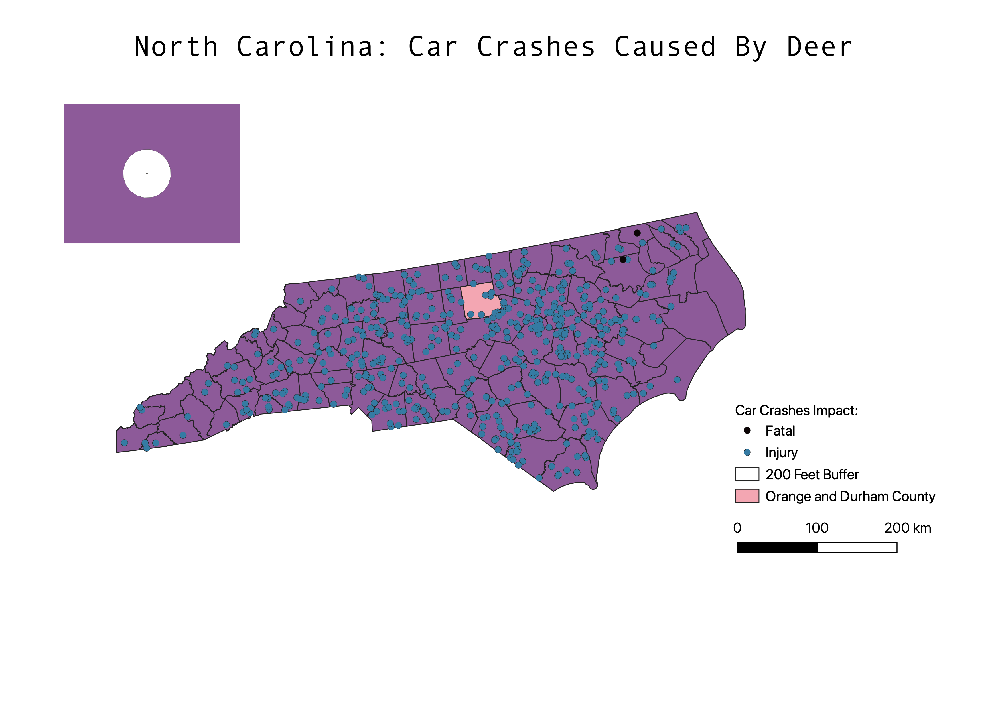

HW 8
Question: What areas are the most prone to collision with deer, and what areas are the most dangerous in terms of injury?
To find my answer, I found a shapefile that showed the points of car crashes with deer and then the result of the car crashes (fatal, injury, other).
I decided to just focus on fatal and injury rather than property damage, so I selected those features and exported them as another file.
I changed the symbology to differentiate between fatal or injury as the result. I then created a buffer from the sites of the crash for 200 feet, to see if it was visibly close to an area.
For most points, the buffer indicated that the crashes were a bit random and dispersed thorughout North Carolina. I then dissolved Orange County and Durham County because I wanted to outline the area that most college students would be driving within.
My conclusion is that the Northern area of NC has the most area prone to danger in terms of fatality. However, most crashes are random.

Homework 8: Source
Homework 8: Buffer
Homework 8: Dissolved
Homework 8: NC